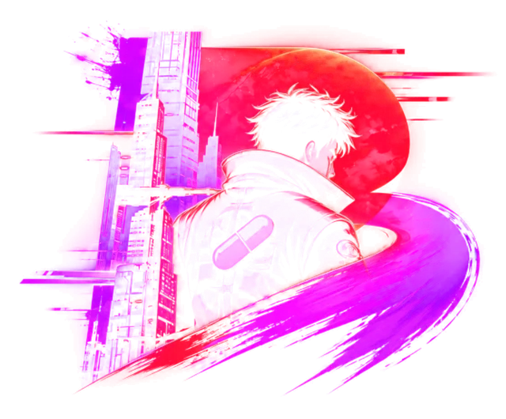

Pré-lançamento · em desenvolvimento
Converta arquivos no ritmo do arraste.
O HoodFiles é um utilitário desktop que converte e manipula arquivos localmente. Comece a arrastar no Explorer, Finder ou Nemo, acione o atalho e solte no menu flutuante: o resultado aparece ao lado do original, que nunca é alterado.
Ainda não há instalador. A prova de interação nativa está em validação nos três sistemas.

- 100% localNada sai do seu computador.
- Originais intactosA saída vai ao lado, sem sobrescrever.
- Três sistemasWindows, macOS e Linux Mint.
Como funciona
Do arraste ao arquivo convertido em três movimentos
Sem abrir outro programa, sem enviar nada para a internet. O menu flutuante só mostra o que realmente dá para fazer com o arquivo que você está segurando.
Demonstração ilustrativa. O aplicativo ainda está em desenvolvimento.
Recursos
Feito para não atrapalhar o seu fluxo
Tudo abaixo é meta de projeto, descrita na especificação. Nenhuma função está pronta ainda, e cada uma só será anunciada depois de testada.
-
Local por padrão
Conversão no seu computador. Sem nuvem, sem login e sem enviar nomes, caminhos ou conteúdo de arquivos para serviços externos.
Meta -
Original intacto
O arquivo de origem nunca é alterado nem apagado. Se o nome já existir, a saída ganha outro nome: nada é sobrescrito em silêncio.
Meta -
Só o que é possível
O menu mostra apenas as operações disponíveis para aquele arquivo e para o motor instalado. Nada de opção que não funciona.
Meta -
Teclado e mouse
Atalho global remapeável, com o mesmo catálogo para teclado e mouse. Escape cancela sem gerar arquivo, e há um modo por janela como alternativa.
Meta -
Lotes com fila
Vários arquivos de uma vez, com progresso, cancelamento por item e falha isolada: um arquivo inválido não derruba os demais.
Meta -
Rápido de verdade
O menu precisa aparecer na hora, durante o arraste. A latência será medida e publicada, sem números inventados.
Meta
Plataformas
Um app, três sistemas, validados de verdade
Compilar não é o mesmo que funcionar. Cada sistema só vira “pronto” depois que uma pessoa arrasta arquivos reais nele.
-
Windows
x64 · Explorer
Prova pendenteCompila e passa nos checks automáticos. O arraste real ainda não foi testado.
-
macOS
Apple silicon · Finder
Prova pendenteCompila e passa nos checks automáticos. O arraste real ainda não foi testado.
-
Linux Mint
x86_64 · Cinnamon (X11) · Nemo
Prova parcialNo Mint 22.3 o overlay abre e a captura do atalho global está em investigação. Sessão X11 é a referência; Wayland não é prometido.
Roadmap
Do arraste validado ao catálogo completo
Cada etapa depende da anterior e só termina com evidência registrada. Formatos listados são metas, não promessas.
-
Agora
HF-00 · Prova nativa
Arraste externo, atalho global e overlay nos três sistemas.
-
Planejado
HF-01 e HF-02 · Fundação e núcleo seguro
Projeto, bandeja, instância única e publicação de saída sem sobrescrita.
-
Planejado
HF-03 a HF-06 · Imagens
JPEG, PNG e WebP; fila e lotes; experiência rápida integrada; beta.
-
Planejado
HF-07 a HF-10 · Mais formatos
Áudio e vídeo, PDF, documentos, planilhas, legendas e compactados.
-
Planejado
HF-11 · Release
Instaladores assinados, checksums, licenças e atualização validada.
Download
Em breve, para baixar e instalar
Por enquanto o HoodFiles existe como projeto e como este site. Quando a prova nativa for concluída, o instalador de cada sistema será publicado aqui. Depois, o projeto poderá ser baixado e usado localmente.